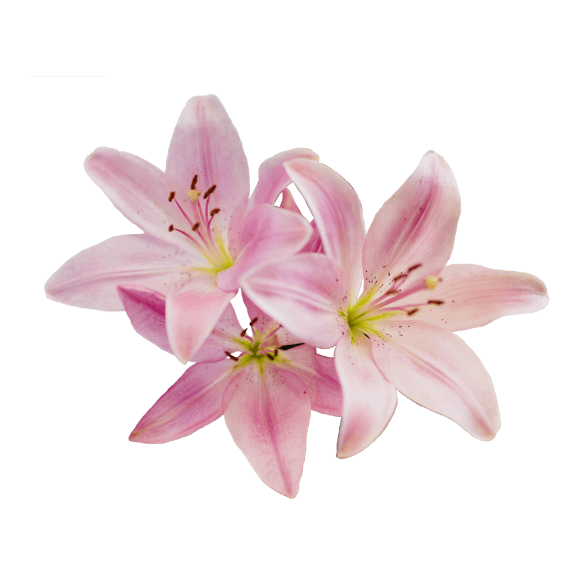

Libre Baskerville is a web font optimized for body text. It is based on the American Type Founder’s Baskerville from 1941, but it has a taller x-height, wider counters and a little less contrast, that allow it to work well for reading on-screen.
Font available from Google Fonts.
Lilies are a group of flowering plants which are important in culture and literature in much of the world. Most species are native to the temperate Northern Hemisphere, though their range extends into the northern subtropics.
While white Lilies symbolise chastity and virtue, other varieties are also popular and have additional meanings and symbolism as well. Peruvian Lilies, or Alstroemeria, represent friendship and devotion, white Stargazer Lilies express sympathy and pink Stargazer Lilies represent wealth and prosperity. Symbolising humility and devotion, Lilies are the 30th anniversary flower.
Symbolising humility and devotion, the flowers most often associated with funerals, Lilies symbolise that the soul of the departed has received restored innocence after death.